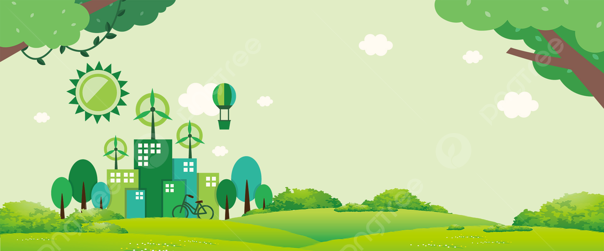
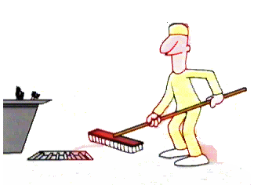

La protección del medio ambiente es una responsabilidad compartida. Todos podemos aportar con acciones pequeñas pero significativas para reducir el impacto ambiental y preservar los recursos naturales.
Las tareas de limpieza dentro de las instituciones educativas fortalecen el sentido de responsabilidad y fomentan el orden.
Participar en jornadas de limpieza institucional promueve valores como el respeto, el trabajo en equipo y la conservación del entorno.
Sembrar árboles ayuda a capturar CO₂, proporciona sombra, mejora el aire y conserva la biodiversidad. Es una de las acciones más efectivas contra el cambio climático.
Preservar la flora y fauna es vital para mantener el equilibrio ecológico. Cada ser vivo cumple un rol importante en su hábitat.